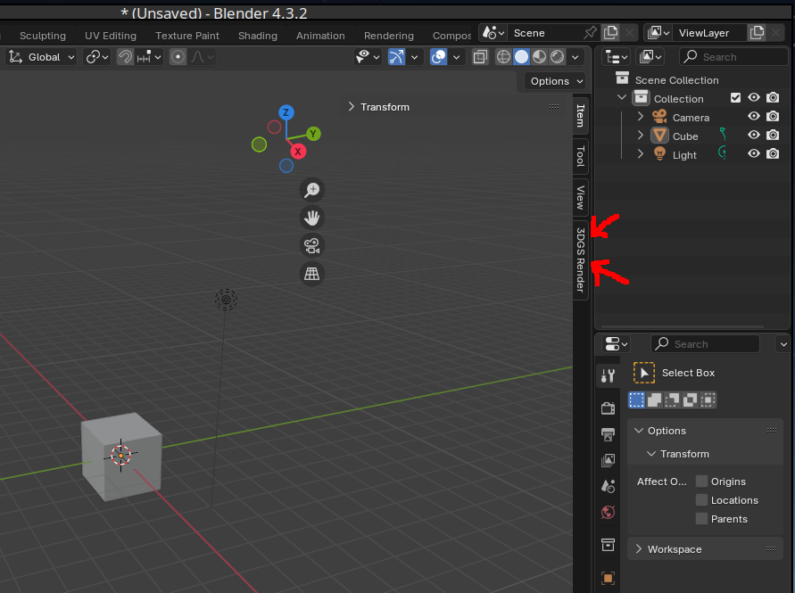
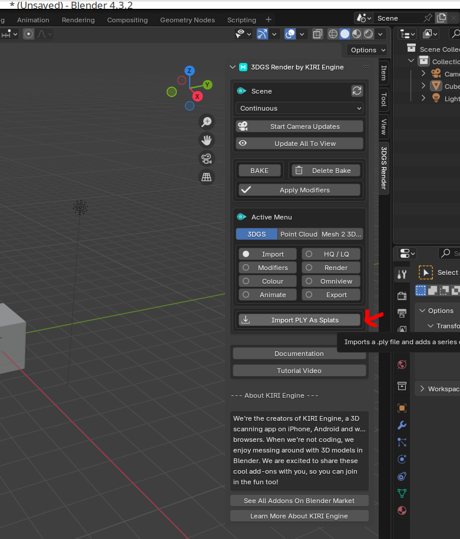

What
With photogrammetry we can convert images to a 3D mesh with textures. There is another method-‘Gaussian Splating’, that can provide superior quality. However it doesn’t produce meshes (sets of triangles) at all, but rather ‘bubbles’ of 3D gaussian distributions. While the result can’t be used for colission detection or rigging, we can combine 3D gaussian splats with traditional meshes and there are methods to produce meshes from gaussian splats albeit without textures. These can be overlayed which is suitable for many applications.

Contents
Contents
When
3D scanning and photogrammetry have interested me for a while. I wrote about how to use photogrammetry to produce true meshes and textures from photos (see Photogrammetry with Meshroom).
Background
Background
Recently I ended up in a rabbit hole on using Neural Networks for 3D reconstruction from Photos, so called “Neural Radiance Fields” (NERFs). The basic idea there is to “shoot” rays of light, similar to ray casting in order to train a neural network. The neural network learns the points in 3D space and can then be used to render to 2D.
It’s slow, inefficient and quality doesn’t look so promising. It did however lay the ground work for a new technique called ‘Gaussian Splating’. Here, instead of trying to create a mesh of triangles and a UV-mapping to a 2D texture file, we instead place Gaussian distributions in 3D space and, using the photos, cleverly optimize - move, rotate, split and merge - them to best adjust to the actual 3D object. In contrast to photogrammetry with Meshroom, these algorithms can be run graphics-accelerated on PyTorch and are extremly efficient.
The down-side is that we are left with a *.ply file auf Gaussian ‘bubbles’. Using Plug-Ins we can display them in Game engines and Blender, but converting to a true mesh of triangles with textures is currently only partially possible.
How
Workflow
As these techniques are still relatively software support is relatively sparse. After some days of research I found a way, using only open-source software and some software from publications on the techniques to produce and display splats.
To capture a splat I’ve found my phone, a Samsung Galaxy S22, to work well. I record 4K video with it. Extract frames from the video and run the frames through NerfStudio as described below:
NerfStudio
After installing “NerfStudio”.
pipx install nerfstudio
Frame extraction from video
We extract frames from a video recording.
VIDEO_FILE="20250904_184452.mp4"
mkdir -p /tmp/workspace/01/
ffmpeg -i $VIDEO_FILE -vf "select=not(mod(n\,10))" -vsync vfr "/tmp/workspace/01/frame-%03d.jpg"
ColMap to get Camera positions from images
Next we can use ns-process-data that in turn uses ColMap to get the camera positions.
$HOME/.local/bin/ns-process-data images --data /tmp/workspace/01/ --output-dir /tmp/workspace/02/
Note: if you receive an “unexpected keyword argument ‘unbound_message’” this is likely due to the version of python flask. pip install flask==2.1.3 fixed that for me [1].
Similar lighting requirements apply as for photogrammetry. Even though Gaussian Splatting can handle poorer quality images, if the area covered in your images set was too large, didn’t cover the area well or lighting wasn’t even, “colmap” will display a warning like this:
Training the Gaussian Splat
With a good set of images, we can move on to run the gaussian splatting
$HOME/.local/bin/ns-train splatfacto --data /tmp/workspace/02/
and watch the progress in the web interface http://127.0.0.1:7007/
To view it later
$HOME/.local/bin/ns-viewer --load-config outputs/02/splatfacto/<date>/config.yml
Export the Splat
In order to export the gaussian splat to file we can use
mkdir /tmp/workspace/03
$HOME/.local/bin/ns-export gaussian-splat --load-config /tmp/workspace/02/splatfacto/<date>/config.yml --output-dir /tmp/workspace/03
Loading and Cropping Splat in Blender
The splat can be loaded into Blender using the “3dgs render” plugin, but the “3D Gaussian Splatting Blender Addon” [2] is simpler to use and sufficient.
Using the “3dgs render” plug-in
Install the Plugin
We first download the blender plugin.
Then add it to blender via the preferences menu.
There is an option to “install from disk”, where we can select the compressed archive.
The plugin “3DGS Render by Kiri Engine” will then show up unter “Add-ons”
Using it
It’s a bit tricky to find. There is a tiny arrow button in the top right in the blender user-interface.
Clicking it reveals a side menu.
In it we can click on the plug-in.
and in the plug-in options import the *.ply splat file we’ve created with NerfStudio.
Viewing the Splat in Blender
We can then view the splat and rotate it.
Cropping
Cropping can be achieved by setting up a cube in the location we want to either include or exclude.
Then use the “Crop Box” feature in the plugin.
This yields the cropped splat.
Which can be best viewed under the “shading tab”.
Using the “3D Gaussian Splatting Blender Addon” plug-in
Alternatively we can use the much simpler “3D Gaussian Splatting Blender Addon” plug-in.#
Installation and usage is very similar. Get the compressed archive from GitHub [2]. Once loaded we use the “Import Gaussian Splatting” button from the plug-in menu.
This first shows the actual splats as Gaussian “bubbles”.
But if we select the right viewing mode and move into the center of the structure we can see it displays correctly.
Editing Splat in CloudCompare
For cropping the splat we can also use a tool called “CloudCompare”.
We can load the splat in cloud in compare.
Use the cut feature to cut the splat to shape.
Producing Meshes
Now in order to produce meshes (I haven’t found a way to do this with textures) from gaussian splats, we can use the “Possion Reconstrution” feature in “CloudCompare”.
To do this we can load the splat in Cloud Compare.
and then select the “possin surface reconstruction” feature.
to produce a mesh.
A better alternative seems to be “SuGaR” [3], published just last year. It is a process for creating a Mesh from a gaussian splat, also using “Poisson reconstruction”. Then the resulting Mesh and the Gaussian Splat are refined to a “hybrid Mesh+Gaussians representation”. From there a Blender plug-in [4] can (probably?) be used to “bake” a texture to get a traditional mesh and texture set.
Results
The results are very impressive at first glance, but we quickly run into the issue of what to do with the data. Except for adding background to scenes we would need to convert the splat to mesh with texture. While there is tooling to do this, it is still relatively basic.
Quality & Clouding
As can be seen in my scan of a renovation, due to the nature of the Gaussian splats, if there is not enough information, we get “cloudy” vision:

Photogrammetry vs. Gaussian Splatting
In their video, “Kiri Engine” claims gaussian splatting converted to mesh produces much better quality than photogrammetry. It may be that Gaussian splatting is the future of 3D reconstruction though I haven’t been able to get that quality of mesh reconstruction from a splat so far.
Progress
Conclusion
The quality of Gaussian splatting over photogrammetry is remarkable, but due to the differences in data representation it’s a challenge to convert from splats to true usable meshes with textures. Methods for this, like using poisson reconstruction, are emerging. We can use the produces meshes for interaction and overlay splats for the texture. That feels a hacky, but I think we’re not far from then painting that color information onto a standard texture.
1] https://stackoverflow.com/questions/73337927/typeerror-init-got-an-unexpected-keyword-argument-unbound-message 2] https://github.com/ReshotAI/gaussian-splatting-blender-addon 3] https://github.com/Anttwo/SuGaR 4] https://github.com/Anttwo/sugar_frosting_blender_addon/